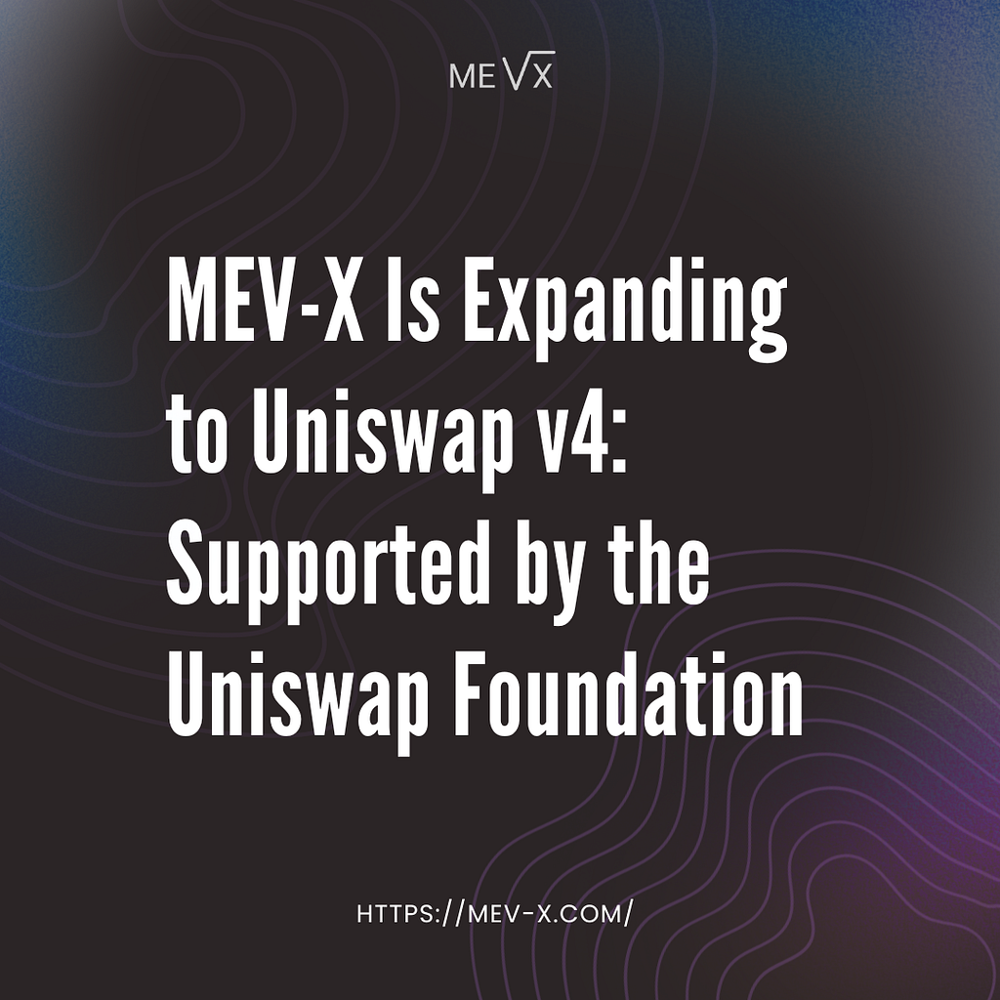

This material was created by the MEV-X team for educational purposes. MEV-X is a research and commercial project created for the extraction of MEV, which aims to form a reliable scientific community and promote the fair distribution of the extracted MEV.

The Uniswap Foundation has supported Homelander. We’re bringing MEV internalization to the largest hook-compatible AMM ecosystem in DeFi.
MEV internalization is the process by which a DEX protocol captures arbitrage value generated by its own orderflow rather than allowing that value to exit to external searchers, validators, and block builders. For protocols running on hook-compatible AMMs, it activates as a post-swap plugin with no changes to core contracts and no impact on user execution.
The Uniswap Foundation Grants Program funds projects that strengthen the Uniswap ecosystem: protocol research, developer tooling, and integrations that expand what’s possible on top of Uniswap infrastructure. The Uniswap Foundation Security Fund specifically exists to make security audits accessible to teams building on Uniswap v4.
Our team received a grant from this fund for the Homelander hook on Uniswap v4. The hook brings MEV internalization to protocols building on v4 and establishes a new revenue layer for orderflow that today exits every protocol entirely.
MEV internalization is becoming a core infrastructure question across DeFi. Having the Uniswap Foundation’s support behind that thesis and behind the product built to execute on it is a validation we’re proud of.
The Uniswap v4 Expansion
Uniswap v4 is the latest generation of on-chain concentrated liquidity AMM protocols. It powers a growing ecosystem of DEXes and protocols building directly on top of its infrastructure, with thousands of pools and deep liquidity across the most active trading pairs in the space.
The defining architectural shift in v4 is hooks: a native plugin interface that lets protocols attach custom logic directly to pool lifecycle events without modifying core contracts. Before a swap, after a swap, before liquidity is added or removed — hooks fire at each of these moments, and the protocol decides what happens inside them. That design made Uniswap v4 a composable infrastructure layer that any team can build on top of, inheriting the full depth of Uniswap liquidity while extending pool behavior in ways that simply weren’t possible before.
For MEV internalization specifically, that architecture is exactly what was needed. Attaching a single post-swap hook is sufficient to activate the full execution pipeline, with no modifications to existing pool logic and no additional permissions required.
The orderflow moving through Uniswap v4 generates significant MEV — a direct consequence of the volume it processes. All of it currently exits the protocol entirely, going to external searchers and block builders. Homelander redirects that value back before it leaves, and the scale at which Uniswap v4 operates makes this the largest opportunity we’ve seen.
How Homelander Integrates on Uniswap v4
Homelander deploys as a Uniswap v4 hook with a single active permission: afterSwap. It requires no modifications to existing pool contracts and is fully compatible with other hooks on the same pool.
The execution flow after every swap:
- The swap completes and the afterSwap hook fires
- Homelander receives the updated pool state, swap params and balance delta
- The execution layer evaluates whether the price movement opened a profitable backrun opportunity
- If profitable: the arbitrage is constructed and executed atomically inside the same transaction, and profit is distributed according to the protocol’s configured revenue-share model
- If not profitable: the hook’s internal operations revert without affecting the swap or the user’s output
hook permissions:
afterSwap: true
all others: false
afterSwap callback:
receive: sender, pool key, swap params, balance delta
call: homelander.triggerBackrun(poolId, amount0, amount1, direction, recipient)
return: afterSwap selector
Pool initialization with Homelander:
PoolKey {
currency0: token0,
currency1: token1,
fee: fee,
tickSpacing: tickSpacing,
hooks: HOMELANDER_HOOK_ADDRESS
}
The hook address is set in the pool key at initialization. After that, the system runs autonomously with no effect on the user’s output regardless of what happens on the MEV side. Because the backrun executes atomically inside the originating transaction, the MEV opportunity never surfaces to the public mempool and the value stays within the protocol’s execution environment.
What Protocols Get From MEV Internalization
Protocols integrating Homelander on Uniswap v4 receive:
- Additional protocol revenue from existing orderflow. Every swap that creates a backrun opportunity is value that currently exits and doesn’t return. Homelander captures it and routes it back according to the distribution configuration defined at integration time: to the protocol treasury, to LPs, or a combination.
- Zero upfront cost. Homelander runs on a pure revenue-share model. MEV-X takes a percentage of captured value; the protocol receives the remainder. If nothing is captured, nothing is owed.
- No impact on user execution. The backrun fires post-swap, atomically, and is invisible to users. Their output is identical whether the backrun succeeds, fails, or finds no opportunity.
We’re grateful to the Uniswap Foundation for supporting this work. This is the largest hook-compatible ecosystem in DeFi, and bringing Homelander here means MEV internalization is now within reach for a new scale of protocols and orderflow!
For a deeper look at Homelander’s mechanics, check the documentation and our earlier publications (I/II/III). If you’d like to explore an integration or partnership, you can reach us on Telegram.